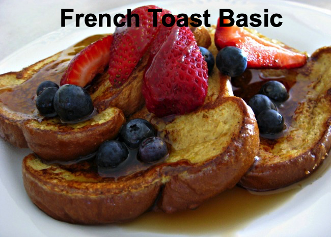

There are many fancy variations on this basic recipe.
This recipe works with many types of bread - white, whole wheat,
cinnamon-raisin, Italian or French. Serve hot with butter or margarine and maple syrup.
Ingregients
- 6 thick slices bread
- 2 eggs
- cup milk
- teaspoon ground cinnamon (Optional but tasty)
- teaspoon ground nutmeg (Optional but tasty)
- 1 teaspoon vanilla extract (Optional but tasty)
- salt to taste
Directions
- Beat together egg, milk, salt, desired spices and vanilla.
- Heat a lightly oiled griddle or skillet over medium-high heat.
- Dunk each slice of bread in egg mixture, soaking both sides.
- Place in pan, and cook on both sides until golden. Serve hot.
Return to recipies page